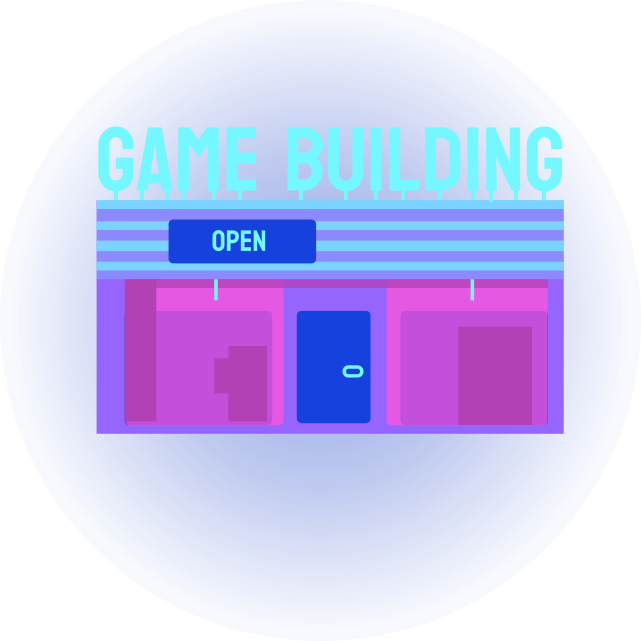

Le gain d’XP des joueurs pc
Dans le cadre de mon travail de fin d’année, je vous transmet ici l’expérience que tout joueurs PC vit et gagnera.
Échange, écoute et Séléction
Le lancement de ce projet de départ consistait à promouvoir la culture geek que ça soit par une ASBL sur des jeux-vidéos ou simplement aller à la rencontre des joueurs. J’ai trouvé la deuxième idée intéressante car, je ne vous invente rien, ce sont les joueurs qui sont le plus concernés par les jeux vidéos. Le sujet m’intéresse beaucoup car tout le monde y trouve son lot de divertissement.

Cela me permet de ramener à la surface certains points nuisibles que les joueurs rencontrent bien souvent, mais qui sont bien souvent minimisés voire banalisés par ce moment de loisir.

Zone de départ
Interraction
Mon idée originelle partait du fait que je voulais simplement comprendre l'expérience des joueurs. Ma mission était maintenant d’aller voir des ASBL et à des salles de jeux vidéo comme Gamestate où les gens se retrouvent pour jouer afin que je leur propose de répondre à mes questions.
J’ai rencontré des joueurs dans des applications de messagerie gratuites, sur des plateformes de streaming et aussi dans des évènements consacrés aux jeux vidéo.

Lors de mes rencontres, que ça soit en face à face ou bien à distance, elles étaient absolument toutes formidable sans exception !
Leur yeux pétillaient de passions pour les jeux vidéo et leur envie de mettre en avant un domaine qui est tout le temps critiqué, les motivaient. Je ne sais pas si c’est le costume de mouton que je portais qui les enchantait mais il était clair qu’ils étaient tout le temps bienveillant et souriant.
Je leur ai fait part d’un formulaire qui les invite à partager leur expérience, en passant d’abord par leur toute première console à leur moment d’ennuyant.

Bien que certains ont commencé avec une Commodore 64 ou une Nintendo NES, la grande majorité jouent maintenant sur PC.

Déceler les obstacles
Après les échanges que j'ai pu avoir, j'ai constaté plusieurs choses.
Il est vrai que certains jeux sont répétitifs, que dans les jeux multijoueurs il y a souvent des méchants joueurs car ils insultent un autre en lui disant « t’es nul ! » car il n’a pas su répondre aux attentes que son équipier avait espérer.
Mais ces soucis sont dans un contexte où le joueur se retrouve embêter de rencontrer de temps en temps des joueurs qui sont salé, ce qui veut tout simplement désigner une personne qui est remplis de haine à en boire ses larmes salées.
Seulement la frustration première d’un joueur et la plus courantes est d’avoir un jeu auquel sont PC n’arrive pas à supporter.
En effet, 90% de la cause des bugs serait dû une mauvaise configuration de notre PC, ainsi le jeu rencontrera des problèmes de textures, de temps de chargement, de crash du jeu en question. Cela révèlerait un gros problème venant de son ordinateur mais aussi un coté frustrant de la part des joueurs.
Condition des joueurs
C’est le problème que beaucoup trop de joueurs rencontre en ce moment même. Ils se plaignent d’avoir des bugs de textures comme de la distorsion et de la disparition d’élément ainsi que des chute de FPS (frames par seconde), lorsqu’ils jouent. Ils n'ont pas de pertes de connexion ce qui est bon à savoir. C’est probablement dû à un manque de ressources venant de leur puissance en terme de Carte Graphique mais il n’empêche que l’expérience que les joueurs rencontre à ce moment là, est bien plus qu’ennuyante.
Éclairage stratégique
Mes hypothèses s’établissent donc de la configuration de PC n’est pas adapté aux jeux. La technologie progresse rapidement et donc les demande de ressources deviennent plus abondantes. Elle se veut beaucoup plus immersive d’où le fait que la 3D à évoluer très vite pour permettre de créer des mondes plus vrais que nature dans les jeux-vidéos. Pour combler les joueurs dans leur immersion, elle demande une machine assez puissante. Mais alors, comment savoir à l’avance si le PC peut supporter le jeu avant de procéder à l’achat ?
C'est pas Internet ?
Je me demande ce qui ralenti le jeu.

La VRAM (Vidéo Random Access Memory, la mémoire vidéo dédier). De manière simple, il s’agit de la mémoire dédiée au GPU (la carte graphique) ; c’est donc l’équivalent de la RAM avec le CPU (le processeur: Utile pour le fonctionnement des programmes et l'affichage de l’écran).
Seulement la VRAM elle vient stocker momentanément les données reçue directement par le jeu et les retires après sont utilisation. La VRAM garde en mémoire certaines données, comme les lourdes ressources graphiques, afin de les charger bien plus rapidement et dans un ordre bien précis. Son plus grand inconvénient à la VRAM est qu’elle ne peut pas être augmentée comme la RAM, car elle fait partie de la carte graphique, elle est soudée. En plus simple, si la mémoire du GPU est insuffisante pour jouer, ils feront alors face à certains problèmes de performances.
Comment savoir combien de VRAM on a ?
La manière la plus simple serait de faire un clic-droit sur l’arrière-plan du bureau et d’accéder au paramètres d’affichage
Ensuite dans les paramètres d’affichages avancés puis dans propriétés de la carte vidéo. Ici on y retrouve donc 8.235Go en mémoire graphique.
L’utilisation de la VRAM dépend du jeu.
Ma solution est de aider les joueurs en quête d’un jeu fluide:
Les résultats de mes interviews montrent bien qu’ils sont frustré vu au nombre de fois qu’ils ont eut des ralentissement de chargement pour que le jeu leurs propose une bonne qualité vidéo. La solution serait de guider les joueurs qui ne veulent plus de bug dû à un manque de ressource en prévenant ceux qui ont déjà un ordinateur de les informer sur les jeux auxquels ils peuvent jouer sans avoir trop de soucis de manque de textures, de crash de jeux. Je suis allée chercher des jeux qui permettraient à chaque configuration de pouvoir trouver son lot de bonheur, c’est-à-dire sans manque de ressources. Ce n’est pas magique, c’est juste le fait de bien comprendre sa configuration. L’aide que j’ai mise au-dessus, montre que que ma VRAM peut aller jusqu’à 8Go de mémoire graphique. Les résultats de mes interviews montrent bien qu’ils sont frustré vu au nombre de fois qu’ils ont eut des ralentissement de chargement pour que le jeu leurs propose une bonne qualité vidéo. La solution serait de guider les joueurs qui ne veulent plus de bug dû à un manque de ressource en prévenant ceux qui ont déjà un ordinateur de les informer sur les jeux auxquels ils peuvent jouer sans avoir trop de soucis de manque de textures, de crash de jeux. Je suis allée chercher des jeux qui permettraient à chaque configuration de pouvoir trouver son lot de bonheur, c’est-à-dire sans manque de ressources. Ce n’est pas magique, c’est juste le fait de bien comprendre sa configuration. L’aide que j’ai mise au-dessus, montre que que ma VRAM peut aller jusqu’à 8Go de mémoire graphique.